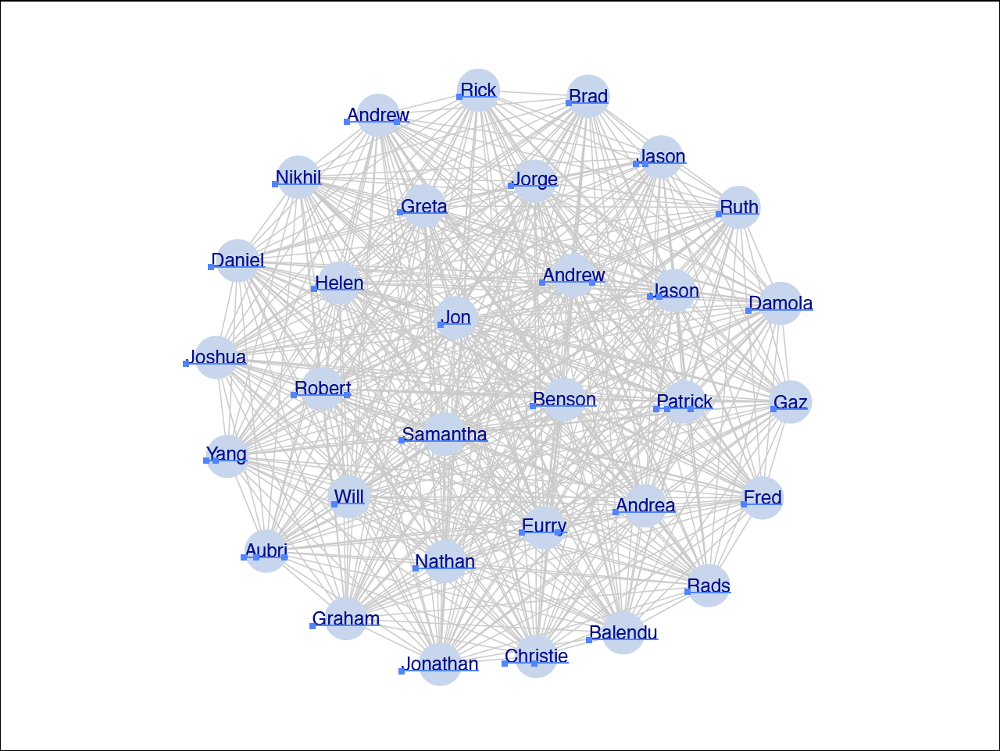

Hi Princeton.
I'm Eurry.
Marketing Science
Today's Agenda
The 2012 Presidential Election
Gallup

NY Times
Tufte Principles for Graphical Excellence
1. Show the data
But which data?
2. Induce the viewer to think about the substance
Design taken for granted
3. Avoid distorting what the data have to say
Clarity
4. Present many numbers in a small space
Data density
5. Make large data sets coherent
The right metrics
6. Encourage the eye to compare different pieces of data
Color, shape, and layout
7. Reveal the data at several levels of detail
The right data cuts
8. Serve a reasonably clear purpose
Not everything that counts can be counted, and not everything that can be counted counts.
Einstein
9. Be closely integrated with the statistical and verbal descriptions of a data set.
Network data
nodes / actors / people
edges / ties / relationships
Cleveland, W.S. (2001)
An action plan for data science

Let's check out my network of Facebook friends

Read in the datasets
# Install package
## Not run: install.packages("igraph")
library(igraph)
# Read in edgelist
eurry.el <- read.csv("datasets/eurry_fb_network.csv", header = TRUE)
# Read in name to ID mappings
id.map <- read.csv("datasets/friend_names.csv", header = TRUE, stringsAsFactors = FALSE)
library(pander)
##
## Attaching package: 'pander'
##
## The following object is masked from 'package:shiny':
##
## p
pander(id.map[1,])
##
## ---------------------
## userid firstname
## --------- -----------
## 500058493 Eurry
## ---------------------
90% of the job
Cleaning/prepping data
#sorrynotsorry
Turn data.frames into graph objects
# Turn edgelist into graph object
eurry.graph <- graph.data.frame(eurry.el, vertices = id.map, directed = FALSE)
# Check object type
class(eurry.graph)
## [1] "igraph"
# Simplify the edgelist
eurry.graph2 <- simplify(eurry.graph, remove.multiple = TRUE, remove.loops = TRUE)
Wait. What's an edgelist?
An edgelist
| fbPerson | fbFriend |
| Eurry | Dan |
| Eurry | Neha |
| Eurry | Sam |
| Eurry | Jorge |
| Eurry | Jerry |
| Eurry | Alva |
| Eurry | Damola |
| Dan | Annie |
| Dan | Neha |
Check the data
me <- get.vertex.attribute(eurry.graph2, name = "firstname")[1]
pander(me)
## Eurry
# Assign vertex labels
V(eurry.graph2)$name <- get.vertex.attribute(eurry.graph2, name = "firstname")
Some network diagnostics
# How many edges?
ecount(eurry.graph2)
## [1] 6228
# How many vertices?
vcount(eurry.graph2)
## [1] 565
# Fewest ties to get from one person to another?
diameter(eurry.graph2)
## [1] 2
# Collect largest cliques in my network
lc <- largest.cliques(eurry.graph2)
The largest clique in my Facebook social network
# Plot my largest clique
plot(induced.subgraph(eurry.graph2, lc[[1]]),
layout=layout.fruchterman.reingold)
Change some visual attributes
plot(induced.subgraph(eurry.graph2, lc[[1]]),
layout=layout.fruchterman.reingold,
edge.color = "gray80",
vertex.color = "light blue",
vertex.size = 5.0)
Assign attributes to vertices
V(eurry.graph2)$color <- "light blue"
V(eurry.graph2)$vertex.size <- 9.0
V(eurry.graph2)$shape <- "square"
plot(induced.subgraph(eurry.graph2, lc[[1]]),
layout=layout.fruchterman.reingold,
edge.color = "gray80")
Circles look better
# Not run: V(eurry.graph2)$color <- "light blue"
# Not run: V(eurry.graph2)$vertex.size <- 9.0
V(eurry.graph2)$shape <- "circle"
V(eurry.graph2)$frame.color <- "transparent"
plot(induced.subgraph(eurry.graph2, lc[[1]]),
layout=layout.fruchterman.reingold,
edge.color = "gray80",
vertex.size = 9.0)

Export as postscript
postscript("visuals/eurry_largest_clique.eps", fonts=c("sans", "Helvetica"))
plot(induced.subgraph(eurry.graph2, lc[[1]]),
layout=layout.fruchterman.reingold,
vertex.label.family="sans",
edge.label.family="Helvetica",
vertex.label.cex=1,
edge.label.cex=2,
edge.color = "gray80")
dev.off()
## pdf
## 2
Adobe Illustrator plays well with eps files

Vector-based graphics
Select > Same > Appearance

Vector-based graphics
Select > Object > Text Objects

Not bad huh?
My entire Facebook social network
plot(eurry.graph2,
layout=layout.fruchterman.reingold,
vertex.size = 2.0,
vertex.color = "dark blue",
vertex.label = NA)
Prepare data for Gephi
eurry.el.gephi <- eurry.el
colnames(eurry.el.gephi) <- c("Source","Target")
write.table(eurry.el.gephi, file = "datasets/eurry_fb_network_gephi.csv", sep = ",", quote = FALSE)
Load the edgelist

Play around

Social TV Conversations on Facebook
fb.socialtv <- read.csv("datasets/fb_socialtv_3july.csv", header = TRUE, stringsAsFactors = FALSE)
head(fb.socialtv)
## channel_name series_name parent_convo_type
## 1 ABC Black Box like
## 2 ABC Black Box like
## 3 ABC Black Box like
## 4 ABC Black Box like
## 5 ABC Black Box like
## 6 ABC Black Box like
## parent_convo_id child_convo_type child_convo_id
## 1 afb665ae093f7ad70dfb27ec25858d8e
## 2 667f9c3edd2c6a2839252fd50ba341c4
## 3 a72b9d5c27dd710d02b551810e73db71
## 4 4f74057d759dcaa3f3151abf25ff7a0f
## 5 7012711de9181d3d1d65f57148795ea1
## 6 a3ce4c7ff3fc2491990039359bb147bf
About the dataset
table(fb.socialtv$parent_convo_type, fb.socialtv$child_convo_type)
##
## comment like
## comment 44014 11 64625
## like 215968 5518 16317
## link 1431 2791 5070
## photo 1671 14864 53260
## reshare 1009 1622 4916
## video 42 420 1046
Data definitions
Think about how Facebook conversations happen.
- Starts with a post containing link, photo, or video
- Friends can like, comment, or reshare that content
- Friends can like those comments or those reshares
Recap & Takeaways
- Iterate, iterate, iterate
- Refer back to Tufte's principles for graphic excellence
- Be inspired by other work
- How would you visualize better?
Resources
Thanks
This presentation was produced in RStudio thanks to the slidify package and the revealjs framework. It was typeset in Quicksand and Raleway.